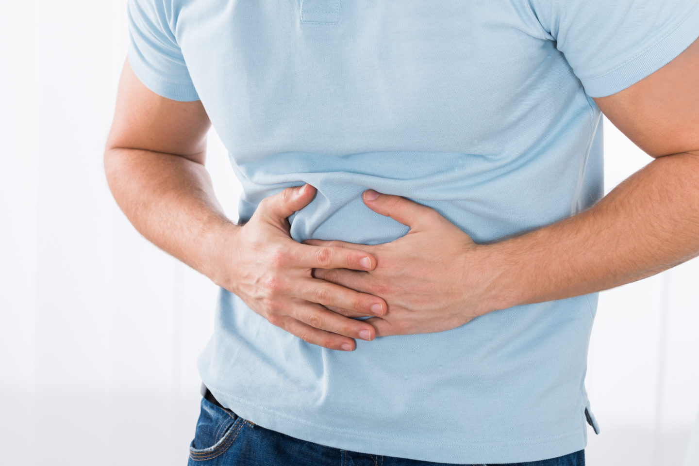

"Хочу висловити щиру подяку фельдшеру Михайлу. Його професійний підхід і здатність заспокоїти мене зробили всю ситуацію легшою."
Валентина
Харчове отруєння часто супроводжується багаторазовим блюванням та діареєю, через що організм швидко втрачає рідину та електроліти. Коли прийом води та ліків усередину ускладнений, на допомогу приходить внутрішньовенна інфузія. Наш медпрацівник оцінить ваш стан, введе необхідні розчини та дасть рекомендації. Виїзд — у день звернення.

При харчовому отруєнні організм зневоднений, а шлунок не засвоює таблетки. Крапельниця доставляє ліки безпосередньо в кров.
Харчове отруєння — стан, що супроводжується нудотою, блюванням, діареєю, болем у животі та зневодненням. Через часту блювоту організм не може засвоїти воду та ліки, що призводить до швидкого погіршення самопочуття.
Інфузійна терапія дозволяє ввести рідину та необхідні речовини безпосередньо в кровотік, минаючи шлунково-кишковий тракт. Це сприяє швидшій регідратації та зменшенню симптомів. Крапельниця не замінює лікування основної причини отруєння, але допомагає стабілізувати стан до консультації лікаря.
Пацієнти часто шукають цю послугу під назвами «капельница при отравлении» або «капельница от ротавируса» (російськомовні варіанти). У медичних джерелах також вживають термін Infusion Therapy for Dehydration або IV Rehydration. На нашому сайті ми дотримуємося української медичної термінології та називаємо процедуру крапельниця при отруєнні.
При сильному блюванні та діареї організм втрачає не лише воду, а й електроліти — натрій, калій, магній, кальцій. Всмоктування в кишечнику порушується, тому випита рідина може не засвоїтися. Внутрішньовенне введення збалансованих сольових розчинів дозволяє швидко поповнити об’єм циркулюючої крові та відновити електролітний баланс. Калій підтримує серцевий ритм, магній зменшує м’язову слабкість, а натрій затримує рідину в судинному руслі. При необхідності можуть додаватися протиблювотні засоби, які при внутрішньовенному введенні діють швидше та надійніше, ніж таблетки.
Залежно від особливостей перебігу захворювання у пацієнта можливе додавання препаратів, які адсорбують токсини, та ліків для захисту слизової оболонки шлунка. Конкретний склад визначається медпрацівником після оцінки стану.
2900 грн
Натрій та хлор забезпечують підтримання об’єму крові та нормальної роботи клітин. Калій необхідний для скорочень серцевого м’яза та передачі нервових імпульсів. Магній зменшує ризик судом та покращує загальне самопочуття. Кальцій бере участь у згортанні крові та скороченні м’язів.
Протиблювотні ліки зменшують позиви до нудоти, а сорбенти допомагають зв’язувати токсини в кишечнику. Усі препарати використовуються лише після з’ясування алергій та супутніх захворювань.
Перед процедурою медпрацівник детально збирає анамнез і за наявності перерахованих станів пропонує альтернативу або направляє до лікарні.
Негайно телефонуйте 103, якщо з’явилися:
Домашня крапельниця не замінює діагностику та лікування в стаціонарі. При підозрі на серйозне захворювання потрібен огляд лікаря.
Основний виїзд здійснюється в Чорноморську та найближчих передмістях: Овідіополь, Великодолинське, Молодіжне, Малодолинське, Санжейка, Грибівка, Кароліно-Бугаз, Затока, Барабой, Олександрівка, Маяки.
Можливий виїзд у готелі, апартаменти, бази відпочинку та приватний сектор на узбережжі. Час та вартість залежать від адреси, уточнюйте під час дзвінка.
"Хочу висловити щиру подяку фельдшеру Михайлу. Його професійний підхід і здатність заспокоїти мене зробили всю ситуацію легшою."
Валентина
"Лікар Сергій — надійний та уважний лікар. Він не лише надав мені якісне лікування, але й пояснив усі деталі."
Віолетта

Ні, ви нічого не купуєте. Ліки та витратні матеріали ми беремо на себе. Якщо у вас є призначені лікарем препарати, повідомте про це під час консультації.
Тривалість інфузії залежить від об’єму розчину та стану пацієнта. Зазвичай процедура займає від 30 до 60 хвилин.
Процедура не проводиться при нирковій недостатності, серцевій недостатності з набряками, підозрі на кишкову непрохідність, кровотечу, вагітності, у віці до 18 років без призначення лікаря. Повний перелік у розділі «Кому процедура не рекомендується».
Так, ми обслуговуємо Овідіополь, Великодолинське, Молодіжне, Малодолинське, Санжейку, Грибівку, Кароліно-Бугаз, Затоку, Барабой, Олександрівку та Маяки.
Так, за попереднім погодженням можливий виїзд у готель, апартаменти або базу відпочинку. Повідомте адміністрацію та надайте точну адресу.
Сухість у роті, відсутність сечі понад 6 годин, запаморочення, слабкість, прискорене серцебиття. Якщо ці симптоми виражені, зволікати не варто.
Дітям до 18 років крапельниці виконуються тільки за призначенням лікаря. Зазвичай при отруєнні у дітей потрібен огляд педіатра або інфекціоніста.
При гострому отруєнні аналізи не потрібні. Але за наявності хронічних хвороб лікар може порекомендувати обстеження.
Рекомендуємо починати з легкого пиття та поступово вводити нежирну їжу: рис, сухарі, банани. Утримайтеся від молочного, гострого та жирного першу добу.
Вартість — від 2900 грн. Це включає огляд медпрацівника, необхідні розчини, витратні матеріали та два пакети регідратаційних засобів для подальшого прийому.
Так, виїзди виконуються цілодобово, без вихідних. Вартість фіксована незалежно від часу доби.
Час прибуття залежить від вашої адреси та завантаження бригади. У Чорноморську зазвичай 30–40 хвилин, у передмістя — до 60 хвилин.
MobiMedx — це компанія досвідчених фахівців, які раніше працювали на екстреній медичній допомозі, в реанімації та терапевтичних відділеннях. Ми розуміємо, наскільки важливою є швидка та коректна допомога при гострих станах.
Для вашого комфорту ми працюємо під ключ: привозимо всі ліки та витратні матеріали з собою. Під час виїзду медпрацівник оцінює стан та приймає рішення щодо можливості проведення процедури вдома.